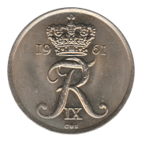
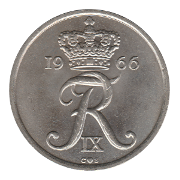
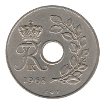
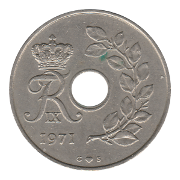
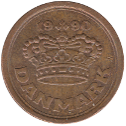

Twenty-Five Øre
Christian IX (1874-1905)
Frederik VIII (1907-1911)
Christian X (1913-1922)
Christian X (1924-1947)
1924-❤ HCN·GJ
1925-❤ HCN·GJ
1926-❤ HCN·GJ
1929-❤ N·GJ
1932-❤ N·GJ
1944-❤ N·GJ
Frederik IX (1948-1960)
1948-❤ N·S
1949-❤ N·S
1950-❤ N·S
1951-❤ N·S
1953-❤ N·S
1954-❤ N·S
1957-❤ C·S
1960-❤ C·S
Frederik IX (1960-1967)
 1961-❤ C·S
1962-❤ C·S
 1966-❤ C·S
Frederik IX (1966-1972)
1966-❤ C·S
1967-❤ C·S
 1968-❤ C·S
1969-❤ C·S
 1971-❤ C·S
1972-❤ S·S
Margrethe II (1973-1988)
1974-❤ S·B
1976-❤ S·B
1977-❤ S·B
1978-❤ S·B
1983-❤ R·B
1984-❤ R·B
1985-❤ R·B
1986-❤ R·B
1988-❤ R·B
Ninth Series
 1990-❤ LG·JP
1991-❤ LG·JP
1993-❤ LG·JP
1996-❤ LG·JP
1997-❤ LG·JP
2003-❤
2005-❤
Back to Denmark
Back to Home